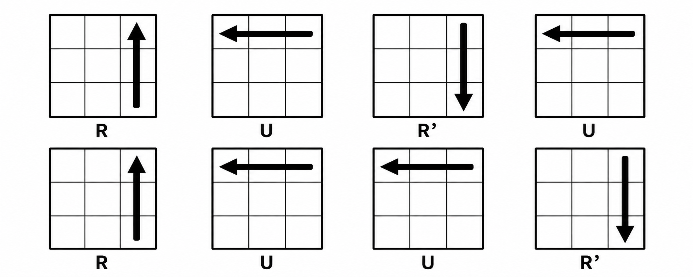

.png)
.png)
.png)
.png)
.png)
Step 1 — White Cross
Hold the cube with Yellow on the bottom (and White on top).
- Find a white edge
- Match its side color
- Bring white to the bottom
- Handle flipped edges
- Repeat for all 4 edges
Look around the cube for an edge piece with white on it.
.png)
Rotate the face containing that edge until its non-white side color matches the center piece next to it.
.png)
Turn that matching side face to bring the white sticker up into the top layer next to the white center.
.png)
.png)
If the white sticker ends up pointing sideways on the top face instead of up, turn that front face once (F), bring the top layer over (U'), use the right side to align it (R), and restore your top layer (U).
.png)
.png)
.png)
.png)
.png)
Repeat this for all four white edges until you have a completed white cross on the top with all side colors matching their centers.
Step 2 — First Layer
Put the white cross on the bottom.
- Locate a white corner
- Position above target spot
- Insert using the Right-Hand Trigger
Look in the top layer for a corner piece with white on it.
Turn the U layer to place the corner directly above the spot where it needs to go.
.png)
Hold the destination spot in the front-right-bottom position and repeat: R U R' U' Repeat 1 to 5 times until the corner is inserted with white facing down and side colors matching. Repeat for all 4 corners.
Step 3 — Second Layer
With the white layer complete on the bottom, find edges in the top layer that do not have yellow on them.
- Make a 'T' shape
- Determine direction
- Insert the edge
- Repeat
Pick a non-yellow edge in the top layer. Look at its front color and turn the U layer until it forms a matching T shape with the center piece below it.
.png)
.png)
Look at the top color of the edge. Check if it needs to move into the front-right slot or the front-left slot.
.png)
.png)
if it needs to move into the front-right slot:
Turn top layer away (U).
.png)
.png)
Run Right Trigger (R U R' U'), and rotate the whole cube right to face the target slot.
.png)
.png)
Run Left Trigger (L' U' L U).
.png)
if it needs to move into the front-left slot:
Turn top layer away (U').
.png)
.png)
Run Left Trigger (L' U' L U), and rotate the whole cube right to face the target slot.
.png)
.png)
Run Right Trigger (R U R' U').
.png)
Do this for all 4 middle-layer edges.
Step 4 — Yellow Cross
Look at the yellow top face. Ignore the corners for now and match one of these pattern cases:
- Dot
- "L" Shape
- Line
- Cross
.png)
Hold anywhere and run: F (R U R' U') F' → gives you the Line.
.png)
Hold the "L" in the top-left (12 o'clock and 9 o'clock) and run: F (R U R' U') F'.
.png)
Hold horizontally (3 o'clock and 9 o'clock) and run: F (R U R' U') F'.
.png)
Skip to Step 5!
Step 5 — Yellow Edges
Turn the top layer (U) to see how many yellow edges match the side center colors.
- 2 Adjacent matches
- 2 Opposite matches
- All 4 match
.png)
Hold one matching edge at the Back and one on the Right.
.png)
Hold from anywhere.
Then do the following algorithm:

(After executing, turn U once to align all 4 edges with their matching centers if you can only align 2 edges, then repeat this step.)
.png)
Skip to Step 6!
Step 6 — Yellow Corners
Look at the top corners to see how many are in the correct position (matching the colors of the three surrounding centers, regardless of orientation).
.png)
- If there is 1 correct corner, hold the matching corner in the front-right-top position.
- If there are 0 correct corners, hold from anywhere.
Then do the following algorithm:
Step 7 — Orient the Last Layer
Now all corners are in their correct spots, but some yellow stickers point to the sides.
- Flip the cube upside down
- Target an unsolved corner
- Orient the corner
- Bring the next corner
- Finish the solve
Flip the cube so the solved white layer is now on top, and the unsolved yellow layer is on the bottom.
.png)
Rotate the bottom layer (D) until an unsolved yellow corner sits in the bottom-right position.
Execute the Right-Hand Trigger until yellow points down: R U R' U'
(Takes 2 or 4 repeats. Do not forget the final U' move!)
DO NOT rotate the whole cube. Turn only the bottom layer (D / D') to move the next unsolved yellow piece to the bottom-right spot. Repeat R U R' U'.
Once all yellow stickers face down, turn the bottom layer to align the final colors!